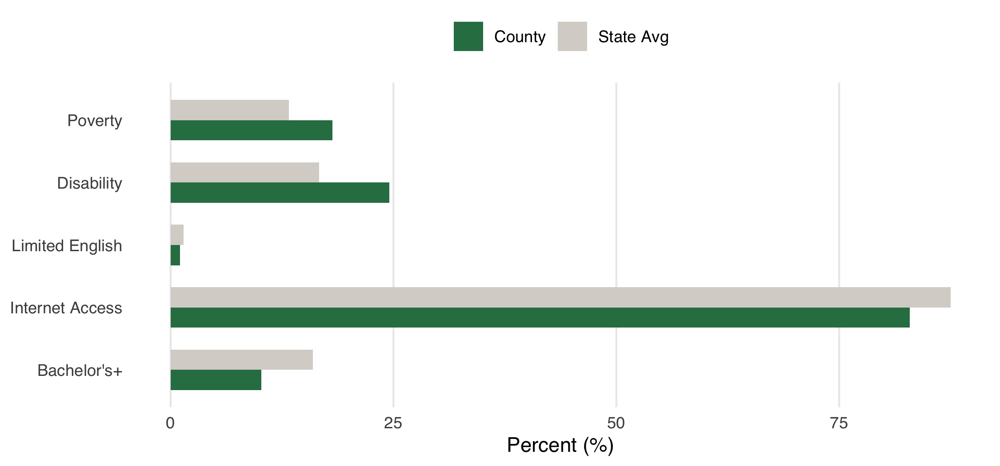
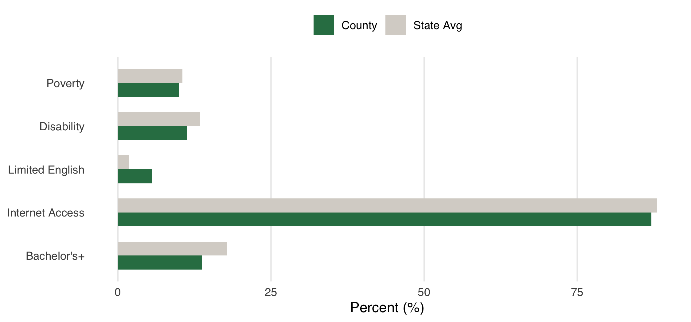
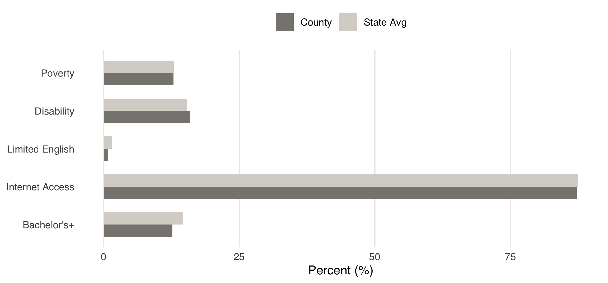
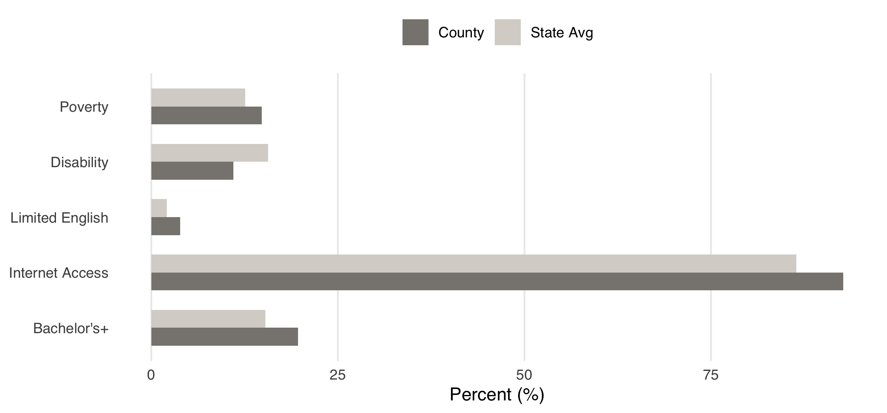
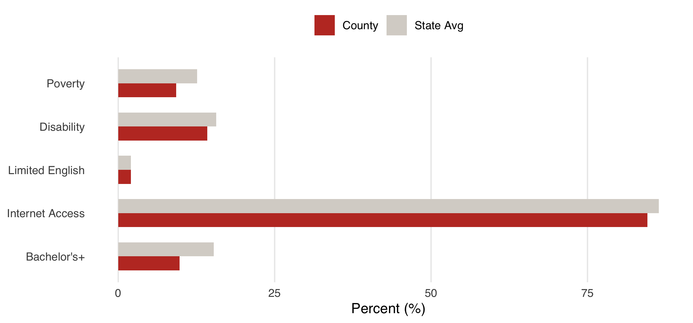
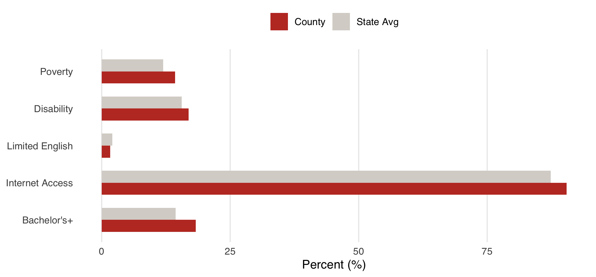
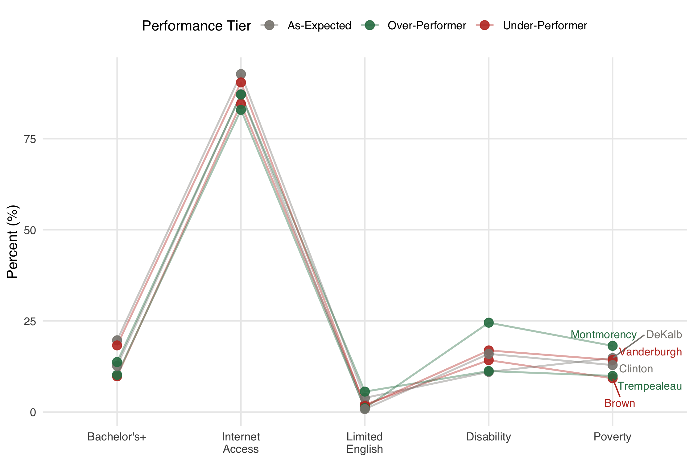

Case Studies
The six case-study counties represent three distinct patterns relative to model predictions. Over-performers suggest that something beyond demographics — institutional access, civic infrastructure, political context — is mobilizing voters. As-expected counties serve as baselines where structural conditions straightforwardly predict participation. Under-performers raise questions about suppression, disengagement, or barriers not captured by the model.
Each county profile includes: (1) key model statistics, (2) a comparison of predictors against the state average, and (3) qualitative findings from secondary source analysis.

County values vs. Michigan state average for all five model predictors.
Montmorency County is among the smallest counties in Michigan — population approximately 9,000, median age 56, 92% white, with an 18% poverty rate higher than the state average and near-average educational attainment. By demographic profile alone, the model predicts moderate turnout. Yet Montmorency achieves 80.1% — the highest residual in the dataset at +16.2 percentage points.
Michigan’s institutional environment is the critical backdrop. Following Proposal 2022-2, Michigan voters approved nine days of early in-person voting, secure ballot drop boxes for every 5,000 voters, and the option to join a permanent vote-by-mail list. The Michigan Department of State’s 2024 Election Report ranked Michigan third in the nation for eligible voter turnout at 74.6% — and attributed gains directly to expanded access. Montmorency’s 50.9% mail or early vote share sits at the state median, suggesting the county is fully utilizing these expanded options.
Beyond institutional access, two county-specific factors likely contribute. First, Montmorency’s older population — median age 56 — is a turnout asset not captured by the model. Age is one of the strongest individual-level predictors of voting, and the model’s omission of age structure likely systematically underpredicts turnout in older counties. Second, Montmorency leans liberal in a predominantly conservative rural Michigan context — a politically engaged minority community may maintain higher mobilization energy than the structural variables suggest.
Key Finding Montmorency’s over-performance likely reflects a combination of Michigan’s permissive institutional access environment and an older population whose high participation propensity is not captured by the model’s demographic predictors. The residual may partly reflect a model specification gap — age — rather than purely unexplained civic factors.

County values vs. Wisconsin state average for all five model predictors.
Trempealeau County is a rural agricultural county of approximately 30,800 in western Wisconsin along the Mississippi River. It is 92% white, lower income than the state average, and predominantly Republican — atypical for Wisconsin, which skews more educated and Democratic overall. By the model’s structural predictions, Trempealeau should perform somewhere near the middle of the distribution. Instead it achieves 75.3% turnout — a +14.5 percentage point residual.
Wisconsin’s institutional environment is the most important explanatory factor. Wisconsin permits same-day voter registration, no-excuse absentee voting, online registration, early voting, and keeps polls open until 8pm. These features benefit all counties, but may disproportionately help counties like Trempealeau whose lower-income, lower-education profile would otherwise predict suppressed participation.
Critically, Trempealeau’s over-performance is analytically important because it challenges the assumption that rural, lower-income, Republican-leaning counties are structurally low-turnout. In Wisconsin’s permissive access environment, this demographic profile does not translate to low participation. This suggests institutional access can compensate for structural disadvantage — a finding that persists even in the more fully specified Model 2, where Trempealeau’s residual remains substantial at +9.2 percentage points.
Key Finding Trempealeau provides the clearest evidence that permissive state voting access policies can compensate for structural demographic disadvantage. A rural, lower-income, lower-education county outperforms its predictions substantially — and continues to do so even after race and lower-tail education are added to the model.

County values vs. Ohio state average for all five model predictors.
Clinton County, Ohio is this project’s most precisely predicted county — a residual of essentially zero in both model specifications. With a population of approximately 40,000, 92% white, 12% poverty, agricultural character, and reliably Republican voting history, Clinton fits the model’s expectations almost perfectly at 65.7% turnout.
No unusual mobilizing or suppressing factors are evident. Clinton has no competitive local races driving exceptional turnout, no notable civic infrastructure beyond Ohio’s standard voting environment, and no documented access barriers beyond the state baseline. Notably, Clinton is whiter and has lower educational attainment than the Ohio average — yet still performs exactly as predicted, validating the model’s ability to handle rural, white, lower-education Ohio counties without systematic bias.
Key Finding Clinton County is what “expected” looks like — a demographically typical rural Ohio county where structural conditions straightforwardly predict participation. Its near-zero residual in both model specifications serves as a validation check for the modeling approach.

County values vs. Illinois state average for all five model predictors.
DeKalb County, Illinois is home to Northern Illinois University and has a population of approximately 100,000 — the largest of the six case counties. It is politically competitive, having voted for Harris in 2024, and demographically diverse with roughly 13.5% Hispanic and 8-9% Black residents alongside a 71-74% white population.
DeKalb’s near-zero residual in both model specifications is analytically interesting as a canceling-out story. The student population likely inflates the CVAP denominator while registering and voting at lower rates than permanent residents — a dynamic partially captured by the model’s education and internet variables. Simultaneously, the competitive political environment drives mobilization from both parties, keeping turnout at predicted levels without pushing it above them. The result is a county where multiple forces balance each other out to produce almost exactly the structural prediction.
Key Finding DeKalb illustrates how competing forces — student population churn, demographic diversity, and competitive elections — can balance each other to produce exactly expected turnout. It represents a structurally complex county that the model nonetheless predicts well.

County values vs. Illinois state average for all five model predictors.
Brown County, Illinois is among the most striking cases in the dataset — a 47.8% turnout rate that is alarming in absolute terms, and the largest negative residual in Model 1 at -16.4 percentage points. With a population of approximately 6,000, Brown is the smallest case county and one of the smallest in the five-state region.
Demographically, Brown is unusual for rural Illinois: 74% white with a 14% Black population — high for a county of its size and location — and 23% of residents lacking a high school diploma, one of the most extreme lower-tail education profiles in the dataset. These features are not fully captured by Model 1, which uses bachelor’s degree attainment rather than the lower tail of the education distribution.
This interpretation is confirmed by Model 2. When racial composition (pct_black) and lower-tail education (pct_no_hs) are added to the model, Brown’s residual collapses from -16.4 to near zero (+1.5 percentage points). This is the most important methodological finding in the case study analysis: Brown County was not genuinely anomalous — Model 1 was underspecified for this demographic profile. The large Black population share and severe educational disadvantage were suppressing turnout in ways the bachelor’s variable alone could not capture.
Illinois’s institutional context adds a secondary layer. Illinois requires registration 28 days before the election with no same-day registration option, which compounds population decline effects — a shrinking rural county accumulates lapsed registrations with no mechanism to re-engage voters on Election Day.
Key Finding Brown County’s dramatic under-performance in Model 1 is largely resolved by Model 2 — revealing a model specification issue rather than a genuinely unexplained civic phenomenon. Adding racial composition and lower-tail education substantially explains the residual, making Brown County the primary evidence for why race and education distribution matter independently in turnout modeling.

County values vs. Indiana state average for all five model predictors.
Vanderburgh County is home to Evansville, Indiana’s third-largest city, with a population of approximately 180,000. It is the most urban of the six case counties and the only one where an urban context combines with a highly restrictive state institutional environment. Its Model 1 residual of -14.5 percentage points makes it the second-largest under-performer in the dataset — and crucially, this residual persists at -11.8 percentage points even in the more fully specified Model 2. Unlike Brown County, Vanderburgh’s under-performance is not resolved by adding demographic controls.
Vanderburgh is not an isolated Indiana anomaly. Six of the bottom ten residuals in the dataset belong to Indiana counties — including Hendricks, Vigo, Madison, Miami, Putnam, and LaGrange alongside Vanderburgh. This clustering strongly suggests a state-level institutional effect rather than county-specific factors.
Indiana’s voting environment is among the most restrictive in the Midwest. The state requires strict photo identification to vote in person and to request an absentee ballot by mail. Absentee voting is not available without excuse — voters must qualify under specific conditions including absence from county, disability, or age 65+. Indiana has no same-day registration, requiring voters to register 29 days before the election. These compounding barriers are directly consistent with the suppression mechanisms documented by Hajnal, Lajevardi, and Nielson (2017), who found that strict identification laws have disproportionate negative effects on racial and ethnic minority voters.
The Evansville NewsLab, a local civic journalism initiative, independently identified low voter turnout as a primary community concern and has launched an active GOTV campaign targeting Gen Z voters, immigrant communities (Latino, Haitian Creole, and Marshallese residents), and Black voters through partnerships with the League of Women Voters and local Black-owned media. This local acknowledgment validates the quantitative finding and suggests the suppression pattern is recognized on the ground.
Key Finding Vanderburgh’s persistent under-performance across both model specifications — combined with Indiana’s dominance of the bottom residual distribution — points to state-level institutional barriers as the primary suppressing factor. This is the strongest evidence in the case study analysis for the institutional access argument, and has direct implications for CLC’s Indiana expansion strategy.
Cross-County Patterns

All six case-study counties plotted across the five model predictors, with state average benchmarks.